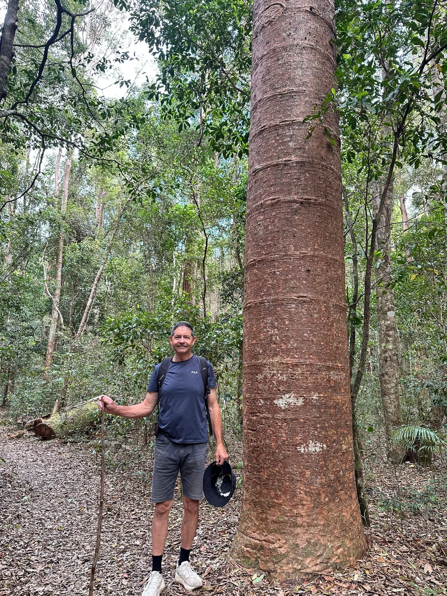

Resources · Events
Meet the team in the field.
Meet Hybrid-Ag at field days and grower conferences, or talk to us about a paddock or block walk.

In the field
Bring your crop questions.
Bring any existing test results and tell us about the crop or decision you would like to discuss. Ask the team about confirmed dates and locations for your crop or district.
Field days and crop walks
Discuss the crop and available results together in the paddock or block.
Conferences and grower events
Meet the Hybrid-Ag team and ask about your crop, test results or prescription blend.
Host a practical session
Talk to us about a focused paddock or block walk for a grower group, business or local network.
You do not need to wait for an event
Talk to the team directly.
Contact the team with a question about your crop or any test results you already have.

Discuss your paddock or block with the team.
Request testing →Is there a field day near you?
Tell us your location and what you grow, and ask about upcoming field days. You can also enquire about testing before you attend.